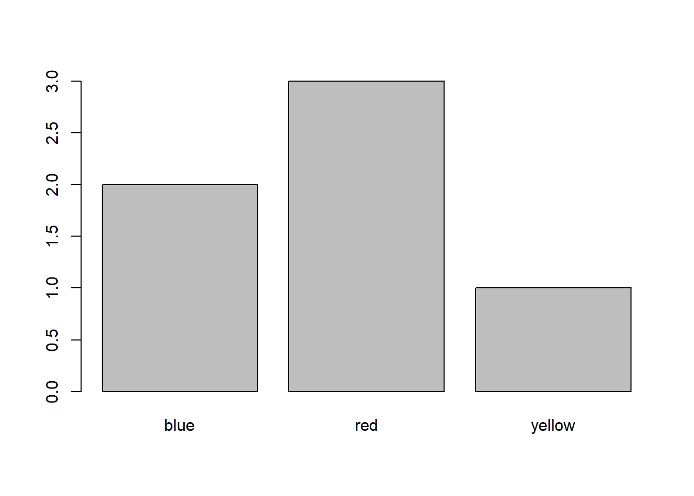
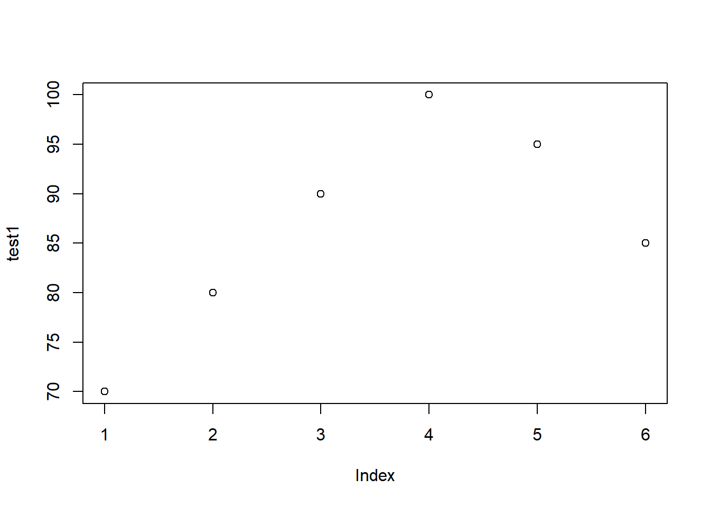

##############################################
##############################################
## factors
##
## For more info see this page:
## https://swcarpentry.github.io/r-novice-inflammation/12-supp-factors/index.html
##############################################
##############################################
########################################################################.
# NUMBERS SHOULDN'T ALWAYS BE USED FOR DOING MATH ...
#
# Some types of numbers are not intended for doing math. For example,
# suppose I asked 1000 people:
#
# Which of the following do you like best:
# "chicken" or "pizza" or "pasta"
#
# and I get 1000 answers - that look like this:
# "pizza" "chicken" "pizza" "pasta" "chicken" "pizza" ... etc
#
# I can put that data into an R vector
# answers = c("pizza","chicken","pizza","pasta","chicken","pizza", etc ...)
#
# but there is not much that I can do with that vector other than figure out
# how many answers I got for each type of food, e.g. 300 for "chicken",
# 500 for "pizza" and 200 for "pasta". There is no way for me to take
# the "mean" of the answers and come up with "pizza flavored chicken"
#
# Similarly, if I changed the question to the following:
#
# Which of the following do you like best:
# answer 1 for "chicken" or 2 for "pizza" or 3 for "pasta"
#
# and I get 1000 answers - that look like this:
# 2 1 2 3 1 2 ... etc
#
# I can put that data into an R vector
# answers = c(2, 1, 2, 3, 1, 2, ... etc)
#
# However, even though the answers now look like numbers taking the mean of
# those numbers would not make any sense. (The mean would be meaningless :)
# 1, 2 and 3 are simply standing in for the values "chicken" "pizza" and "pasta".
# Taking a mean of these numbers would make no more sense than taking a
# mean of c("pizza","chicken","pizza", etc ...).
#
# So we can see clearly that you shouldn't always do "math" with numbers.
########################################################################.
#########################################################################.
# SOME CHARACTER DATA IS NOT INTENDED FOR TALLYING RESULTS
#
# For some character data it is appropriate to add up how many copies of
# the same value appear in the data. In the example above in response to
# asking 1000 people the question:
# which do you like best "chicken" "pizza" or "pasta"
#
# we might put the results in a character vector, e.g.
# answers = c("pizza","chicken","pizza","pasta","chicken","pizza", etc ...)
#
# It would be very appropriate to "tally these values" (ie. add up how many
# of each response there is). For example we might figure out there were
# 300 answers for "chicken", 500 for "pizza" and 200 for "pasta".
#
#
# However, suppose I have data in parallel vectors that record info about
# students in a school. The vectors might look like this:
# studentNames = c("Mike Smith", "Anne Jones", "Larry Cohen", ... etc)
# year = c("sophomore", "freshman", "sophomore", ... etc)
# age = c(18, 21, 16, ... etc)
# satMath = c(400, 650, 520, ... etc)
#
# A statistician working with the data to figure out school policy and
# demographics would typically not need to tally
# the student names, e.g. 1 "Mike Smith", 1 "Anne Jones", 1 "Larry Cohen", etc.
#
# NOTE - it might be interesting to know if there are two people with the
# same name - HOWEVER - a "statistician working with the data to figure out
# school policy and demographics" would not need to do that.
###########################################################################.
###########################################################################.
#
# *** INTRODUCING R "factors" ***
#
# DIFFERENT TYPES OF NUMBERS ... DIFFERENT TYPES OF CHARACTERS ...
# = DIFFERENT "classes" OF DATA IN R
#
#
# As we know R has the following "classes" of data that are intended to be used
# in the following ways:
#
# "numeric" vectors - for numbers for which doing "math" is appropriate
#
# "character" vectors - for data that has no inherent meaning and does
# NOT need to be tallied (e.g. studentNames in example above)
#
# R also has another class of data:
#
# "factor" vectors - used for numeric data that is NOT appropriate for math
# also used for character data that is not appropriate for tallying
#
# For example you could use an R "factor" to store the answers
# to either question about favorite food, whether the
# answers are given with words, e.g. "pizza", "chicken" , etc
# or if the answers are given with numbers, e.g.
# 1 for chicken, 2 for pizza, etc.
#
# KEEP READING FOR MORE INFO ABOUT HOW TO WORK WITH FACTORS IN R
#
###########################################################################.
#------------------------------------------------------------------------------
# Different types of data in statistics
# See this for a good overview:
#
# https://www.scribbr.com/statistics/levels-of-measurement/#:~:text=Nominal%3A%20the%20data%20can%20only%20be%20categorized.,and%20has%20a%20natural%20zero.
#
#
# - nominal/categorical data
#
# (ratios are OK, > and < are not OK, means are not OK)
# R uses "factor", i.e. factor( ... ) - see below
#
#
#
# - ordinal data (ratios are OK, > and < are OK, means are not OK)
# R uses "ordered factor", ie. factor( ..., ordered=TRUE)
#
#
#
# - interval data (see the above webpage)
# - ratio data (ratios are OK, > and < are OK, means are OK)
#
# R uses "numeric" for both of these types of data
# (also "integer" and "double" - these are beyond the scope of what we've discussed)
#------------------------------------------------------------------------------
#------------------------------------------------------------------------------
# What is a factor?
#
# A "factor" is R's way of making it easy for statisticians to work with
# nominal/categorical data.
#
# A factor ...
# - is a vector
# - has a "class" attribute that is set to "factor"
# - has a "levels" attribute that contains a vector of level names
# (see more below)
#------------------------------------------------------------------------------
# character data - is used for data that is not going to be involved in statistical calculations
#
# Data such as peoples names are generally not used for statistical analysis.
# For example, I generally wouldn't care about what the most common name is
# in my data or what percent of the people have each name or what the ratio
# is of "joes" to "bobs" in my data. These are all questions that don't really
# make any difference to a typical statistician.
# The name of the person is simply a name that I can use to refer to the data for that person.
#
# Character data that you are not expecting to use for statistical analysis should
# simply remain as "character" data - NOT as a factor.
#
# [ If for some reason you DO care about statistical analysis of the names of the
# people then you could make this data into a factor. ]
person <- c("joe", "sue", "bob", "alan", "anne", "pearl")
person[1] "joe" "sue" "bob" "alan" "anne" "pearl"class(person) # "character"[1] "character"# numeric data is data for which you expect to perform mathematical operations
# such as: + - * / ^ sqrt, max, min, sum, mean, etc.
# This type of data should NOT be made into a factor.
#
# For example test grades that will be analyzed numerically - eg. mean, max, etc
# should NOT be a factor.
test1 <- c(70,80,90,100,95,85)
test1[1] 70 80 90 100 95 85class(test1) # "numeric"[1] "numeric"# For nominal/categorical data use a factor in R.
#
# For example, let's say you would want to perform statistical analysis
# on people's favorite colors. For example you might be curious to know
# how many people have "blue" as their favorite color, what is the most common
# favorite color or what percent of the people have each favorite color
# then favorite color should be a factor.
favcolor <- factor(c("red", "blue", "red", "red", "blue", "yellow"))
favcolor[1] red blue red red blue yellow
Levels: blue red yellowclass(favcolor) # "factor"[1] "factor"# The "levels" of a factor are the different values that the data can have.
# For the favcolors data shown above, the valid values are "red", "blue" and
# "yellow". These are the levels of the factor.
levels(favcolor) # "blue" "red" "yellow" (in alphabetical order)[1] "blue" "red" "yellow"#------------------------------------------------------------------------------
# plot( x ) # works differently for different classes of x
# summary( x ) # works differently for different classes of x
#
# Some R functions will work differently with factor data than with
# other types of data.
#
# Examples: summary, plot
#------------------------------------------------------------------------------
summary(favcolor) # for factors shows the number of each "level" in the data (see output) blue red yellow
2 3 1 summary(test1) # for numeric shows a numeric summary (see output) Min. 1st Qu. Median Mean 3rd Qu. Max.
70.00 81.25 87.50 86.67 93.75 100.00 summary(person) # for character not much useful data (see output) Length Class Mode
6 character character plot(favcolor) # a bar chart of the numbers of number of values for each color
plot(test1) # a "dot plot" of the values of each individual test grade
plot(person) # ERROR - you cannot plot character dataWarning in xy.coords(x, y, xlabel, ylabel, log): NAs introduced by coercionWarning in min(x): no non-missing arguments to min; returning InfWarning in max(x): no non-missing arguments to max; returning -InfError in plot.window(...): need finite 'ylim' values
#.............................................................................
# WARNING - if you try calling plot from RStudio and the window that displays
# the plot is too small to display the plot you may get an error similar to
# the following:
#
# > plot(person)
# Error in plot.new() : figure margins too large
#
# To fix this, simply make the window for the plot larger and run the command again.
#.............................................................................
#------------------------------------------------------------------------------
# An "ordered factor" is R's way of working with ordinal data.
# An ordered factor ...
# - ... is a vector
# - ... has a "class" attribute that is set to "ordered" factor"
# - ... has a "levels" attribute that contains a vector of level names
# (see more below)
#------------------------------------------------------------------------------
# ordinal data (use an "ordered factor" in R)
#
# nominal/categorical data that also have an implied "order" to the data
# is known as "ordinal" data and should be stored as an "ordered factor"
#
# For example, students in college are categorized as freshmen, sophomores,
# juniors and seniors. However, there is also an implied order, in that
# the category depends on the number of credits taken (or the number of year
# in college). Freshmen have the fewest credits (or years in college)
# while seniors have the most credits (or years in school). This implies
# the order freshman, sophomore, junior, senior.
#
# Notice that I included a "levels" argument in the call to the factor function
# to list the exact levels. The values in the levels argument should be
# arranged in the correct order.
year <- factor(c("fr", "so", "fr", "so", "fr", "se"),
ordered=TRUE,
levels=c("fr","so","ju","se"))
year[1] fr so fr so fr se
Levels: fr < so < ju < seclass(year) # "ordered" "factor"[1] "ordered" "factor" levels(year) # "fr" "so" "ju" "se"[1] "fr" "so" "ju" "se"plot(year) # all 4 levels - including ju are plotted
# WHAT IF YOU DID NOT SPECIFY levels= ... AND ordered = TRUE
year <- factor(c("fr", "so", "fr", "so", "fr", "se"),
ordered=TRUE)
year[1] fr so fr so fr se
Levels: fr < se < soclass(year) # "ordered" "factor"[1] "ordered" "factor" levels(year) # "fr" "se" "so" - "ju" isn't there - the order is alphabetical[1] "fr" "se" "so"plot(year) # no column for ju and columns are in alphabetical order
# WHAT IF YOU DID NOT SPECIFY levels= ... AND ordered = FALSE
year <- factor(c("fr", "so", "fr", "so", "fr", "se"),
ordered=FALSE)
year[1] fr so fr so fr se
Levels: fr se soclass(year) # "factor"[1] "factor"levels(year) # "fr" "se" "so" - "ju" isn't there - the order is alphabetical[1] "fr" "se" "so"plot(year) # no column for ju and columns are in alphabetical order
#------------------------------------------------------------------------------
# Sometimes data that looks like numbers should in fact be treated as
# factor data. For example, if you ask a survey question whose answers
# are recorded as a number but in fact these numbers actually
# represent nominal/categorical data the numbers should in fact be stored as
# a factor in R and not as numeric data.
#------------------------------------------------------------------------------
#...........................................................................
# EXAMPLE: The following data contains the answer to the survey question:
#
# What is your favorite color?
# 1=red 2=blue 3=green 4=other
#
# Since the actual data "red", "blue", "green", "other" is
# nominal/categorical data and NOT numeric the numbers 1,2,3,4 that are used
# to record the answers should obviously NOT be used to perform
# arithmetic (+-*/^,mean,sum,etc). Therefore these numbers
# would be recorded as a factor and not a numeric vector.
#
# Note that with the data stored as a factor you can still count
# the number of people who answered each choice or find
# the percent of people who answered each choice.
#...........................................................................
survey <- factor(c( 4, 1, 1, 2, 2, 2), levels = 1:4)
survey[1] 4 1 1 2 2 2
Levels: 1 2 3 4class(survey) # "factor"[1] "factor"levels(survey) [1] "1" "2" "3" "4"plot(survey)
summary(survey)1 2 3 4
2 3 0 1 #...........................................................................
# Another Example: "ordered factor" data
#
# Survey question:
#
# How may years of schooling do you have?
# 1=some high school, 2=hs graduate, 3=some college, 4=college grad ,5=advanced degree
#
# Here, as in the previous example, the numbers 1,2,3,4 that represent the
# answers "some high school", "hs graduate", etc. should not be used in arithmetic
# calculations.
#
# However, in this example there is an implied order to the choices.
# People who answered "some high school" have had fewer years of school than
# people who answered "hs graduate" who have had fewer years of school than
# people who answered "some college", etc.
#
# Therefore the data should be stored in an "ordered factor" by specifying
# ordered=TRUE in the call to the factor function.
#...........................................................................
education <- factor(c( 2, 4, 4, 1, 5, 4),
ordered=TRUE,
levels=1:5)
education[1] 2 4 4 1 5 4
Levels: 1 < 2 < 3 < 4 < 5class(education) # "ordered" "factor"[1] "ordered" "factor" levels(education)[1] "1" "2" "3" "4" "5"summary(education)1 2 3 4 5
1 1 0 3 1 plot(education)
?factorstarting httpd help server ... done#-------------------------------------------------------------------------
# Review of the Basic and complex "data structures" in R
#-------------------------------------------------------------------------
# R has numerous "data structures". The following are the "basic"
# data structures that we learned about:
#
# - numeric, logical and character vectors
# Note: there are other types of vectors that we did not cover, i.e.
# integer, double, complex and raw.
#
# - lists
#
# NOTE: Usually, the R documentation uses the terms "vector" and "list" as we
# have been using them. However, in some places, the R documentation uses the terms
# "atomic vector" to refer to what we've been calling simply a "vector" and
# "recursive vector" to refer to what we've been calling a "list".
#
# The following are more complex data structures that are built on
# top of R's "basic" data structures.
#
# - matrices (A matrix is a vector that has a "dim" attribute
# The value of the "dim" attribute is a numeric vector
# that contains the number of rows and cols of the matrix)
#
# - factors (A factor is a numeric vector that contains a
# "class" attribute, set to "factor" and a
# "levels" attribute set to a character vector with the names of the levels)
#
# - dataframes (We didn't cover this yet.
# A dataframe is a list of vectors, all of the same length.
# The list has the following attributes:
#
# name of attribute value of attribute
# ----------------- ------------------
# class "data.frame"
#
# names character vector with the names of
# the columns of the dataframe
#
# row.names character vector with the names of
# rows of the dataframe.
#
# - R contains many other more complex arrangements of data
# (ie. data structures) that are constructed from
# vectors, lists and attributes.
#-------------------------------------------------------------------------
df = data.frame( student = c("joe", "sue", "anne"),
test1 = c(70,80,90),
tes2 = c(75,85,95))
df student test1 tes2
1 joe 70 75
2 sue 80 85
3 anne 90 95#-------------------------------------------------------------------------
# Review of mode vs class (we covered this in the last file on matrices)
#-------------------------------------------------------------------------
# mode returns the name of the underlying basic type of a data structure.
#
# mode(SOME_NUMERIC_VECTOR) # "numeric"
# mode(SOME_CHARACTER_VECTOR) # "character"
# mode(SOME_LOGICAL_VECTOR) # "logical"
# mode(SOME_LIST) # "list"
#
# mode(SOME_MATRIX) # "numeric" or "character" or "logical"
# mode(SOME_FACTOR) # "numeric"
# mode(SOME_DATAFRAME) # "list"
#
# For a complex data structure (e.g. matrix, factor, dataframe)
# class returns the name of the more complex structure.
# For the basic data structures (i.e. vectors and lists) the class function
# returns the same value as the mode function
#
# class(SOME_NUMERIC_VECTOR) # "numeric"
# class(SOME_CHARACTER_VECTOR) # "character"
# class(SOME_LOGICAL_VECTOR) # "logical"
# class(SOME_LIST) # "list"
#
# class(SOME_MATRIX) # "matrix" "array"
# class(SOME_FACTOR) # "factor" or "ordered" "factor"
# class(SOME_DATAFRAME) # "data.frame"
#
# If you attach a "class" attribute to any data, R will return the
# value of the "class" attribute as the result of the class function.
#-------------------------------------------------------------------------
#...............
# some examples
#...............
# matrix
mat = matrix(c(10,20,30,40,50,60), nrow=2, ncol=3)
mat [,1] [,2] [,3]
[1,] 10 30 50
[2,] 20 40 60mode(mat) # "numeric"[1] "numeric"class(mat) # "matrix"[1] "matrix" "array" # factor
favcolor <- factor(c("red", "blue", "red", "red", "blue", "yellow"))
favcolor[1] red blue red red blue yellow
Levels: blue red yellowmode(favcolor) # "numeric" (see below for why this is numeric)[1] "numeric"class(favcolor) # "factor"[1] "factor"# ordered factor
year = factor(c("fr", "so", "fr", "so", "fr", "se"),
ordered=TRUE,
levels=c("fr","so","ju","se"))
year[1] fr so fr so fr se
Levels: fr < so < ju < semode(year) # "numeric" (see below for why this is numeric)[1] "numeric"class(year) # "ordered" "factor"[1] "ordered" "factor" # data.frame
df = data.frame(students=c("joe","sam","sue"),
test1=c(70,80,90),
test2=c(75,85,95),
honors=c(FALSE,FALSE,TRUE),
stringsAsFactors = FALSE)
df students test1 test2 honors
1 joe 70 75 FALSE
2 sam 80 85 FALSE
3 sue 90 95 TRUEmode(df) # "list"[1] "list"class(df) # "data.frame"[1] "data.frame"#--------------------------------------------------------------------------
# Levels of a factor
#
# - stored as a "levels" attribute
#
# - attr(SOME_FACTOR, "levels")
#
# - levels(SOME_FACTOR) # shorthand for attr(SOME_FACTOR, "levels")
#
# - by default levels are stored in sorted order
# (alphabetic order, or numeric order depending on data)
#--------------------------------------------------------------------------
# The "levels" of a factor are stored in the "levels" attribute as a "character" vector
# EXAMPLES
favcolor[1] red blue red red blue yellow
Levels: blue red yellowlevels(favcolor) # "blue" "red" "yellow" - in alphabetical order[1] "blue" "red" "yellow"year[1] fr so fr so fr se
Levels: fr < so < ju < selevels(year) # "fr" "se" "so" - notice "ju" (i.e. junior) is missing, it wasn't in the data[1] "fr" "so" "ju" "se"summary(year) # "ju" is missing - order of levels is alphabeticalfr so ju se
3 2 0 1 plot(year) # "ju" is missing - order of levels is alphabetical
education[1] 2 4 4 1 5 4
Levels: 1 < 2 < 3 < 4 < 5levels(education) # in numeric order, notice 3 is missing [1] "1" "2" "3" "4" "5"summary(education) # "3" is missing1 2 3 4 5
1 1 0 3 1 plot(education) # "3" is missing
x = factor(c(100,2)) # numeric data
levels (x) # "2" "100" - in numeric order, even though levels is a character vector[1] "2" "100"#--------------------------------------------------------------------------
# Setting the levels explicitly
#
# If your data is missing some values or
# if you want the levels to be in a specific order you can explicitly specify a
# vector for the levels when you create the factor.
#
# factor ( ... levels = SOME_VECTOR ...)
#--------------------------------------------------------------------------
# remember that for year, there were no juniors so "ju" didn't appear
# in either the summary or in the plot.
#
# Also the years are not in the correct order
# notice that "se" (i.e. senior) is before "so" (i.e. sophomore)
# the order should be "fr" "so" "ju" "se"
year[1] fr so fr so fr se
Levels: fr < so < ju < sesummary(year)fr so ju se
3 2 0 1 plot(year)
# Recreate the year variable to ensure that ALL "levels" are included
# and that order of levels is as desired.
year <- factor(c("fr", "so", "fr", "so", "fr", "se"),
levels=c("fr","so","ju","se")) # ordinal data (use a factor in R)
plot(year) # now data is in order and ju shows a zero total
summary(year) # now data is in order and ju shows a zero totalfr so ju se
3 2 0 1 education <- factor(c( 2, 4, 4, 1, 5, 4),
levels=c(1,2,3,4,5)) # nominal data (use a factor in R)
# similar approach for education
plot(education)
summary(education)1 2 3 4 5
1 1 0 3 1 # A factor ...
# 1. ... is a "numeric" vector (yes "numeric" not "character" - keep reading)
# 2. ... has a "class" attribute with a value of "factor"
# 3. ... has a "levels" attribute that is a character vector with the names
# of the levels with a value of "factor"
year[1] fr so fr so fr se
Levels: fr so ju seattributes(year)$levels
[1] "fr" "so" "ju" "se"
$class
[1] "factor"class(year)[1] "factor"education[1] 2 4 4 1 5 4
Levels: 1 2 3 4 5attributes(education)$levels
[1] "1" "2" "3" "4" "5"
$class
[1] "factor"class(year)[1] "factor"# Turn year into a character vector
charYear <- as.character(year)
charYear[1] "fr" "so" "fr" "so" "fr" "se"year[1] fr so fr so fr se
Levels: fr so ju seis.factor(charYear)[1] FALSEis.factor(year)[1] TRUE# Turn a character vector into a factor with the factor function
charYear[1] "fr" "so" "fr" "so" "fr" "se"facYear <- factor(charYear, levels=c("fr","so","ju","se"), ordered=TRUE)
facYear[1] fr so fr so fr se
Levels: fr < so < ju < se#-------------------------------------------------------------------------
# A factor is actually a "numeric" vector!!! (yes, numeric, not character)
#
# R stores the data for a factor in a numeric vector as it is often more
# efficient for the computer to process numbers than it is to process
# character data.
#
# See below for details ...
#-------------------------------------------------------------------------
rm(list = ls()) # start over
# when R creates a factor it does the following:
# It uses the numbers 1,2,3, etc.
# to represent the first,second,third, etc levels
#
# R stores this data in a numeric vector and stores the names
# of the levels in the levels attributes
#
# R creates a class attribute with the value of "factor"
colors <- factor(c("violet", "red", "green", "red", "green", "violet", "red", "red"))
colors[1] violet red green red green violet red red
Levels: green red violetis.factor(colors) # TRUE[1] TRUEis.character(colors) # FALSE[1] FALSEis.numeric(colors) # FALSE[1] FALSEattributes(colors) # all of the attributes -i.e. class and levels$levels
[1] "green" "red" "violet"
$class
[1] "factor"# To see the actual data you can remove the class attribute
attr(colors, "class") = NULL # this also works: class(colors) = NULL
attributes(colors) # class is gone$levels
[1] "green" "red" "violet"# Since we removed the class attribute,
# colors is no longer a factor - it is just a "numeric" vector (yes, "numeric" - keep reading)
# that has some attributes.
colors[1] 3 2 1 2 1 3 2 2
attr(,"levels")
[1] "green" "red" "violet"is.factor(colors) # FALSE[1] FALSEis.character(colors) # FALSE[1] FALSEis.numeric(colors) # TRUE[1] TRUE#----------------------------------------------------------------------------
# unclass( SOME_OBJECT )
# - returns SOME_OBJECT but without the class attribute
#----------------------------------------------------------------------------
rm(list = ls()) # start over
# create a factor
colors <- factor(c("violet", "red", "green", "red", "green", "violet", "red", "red"))
colors[1] violet red green red green violet red red
Levels: green red violet# unclass(colors) returns colors without the class attribute
unclass(colors)[1] 3 2 1 2 1 3 2 2
attr(,"levels")
[1] "green" "red" "violet"# the original variable didn't change
colors[1] violet red green red green violet red red
Levels: green red violet# REMEMBER - if you want to change the original variable, you must assign to it!
colors = unclass(colors)
colors[1] 3 2 1 2 1 3 2 2
attr(,"levels")
[1] "green" "red" "violet"is.factor(colors) # FALSE[1] FALSEis.numeric(colors) # TRUE[1] TRUE#-------------------------------------------------------------------------
# WARNING: as.numeric will convert a factor into the underlying numeric
# values of the levels
#
# Data whose value is equal to the 1st "level" is recorded as 1
# Data whose value is equal to the 2nd "level" is recorded as 2
# etc.
# (see example below)
#-------------------------------------------------------------------------
rm(list = ls()) # start over
colors <- factor(c("violet", "red", "green", "red", "green", "violet", "red", "red"))
colors[1] violet red green red green violet red red
Levels: green red violetattributes(colors)$levels
[1] "green" "red" "violet"
$class
[1] "factor"as.numeric(colors) # 3 2 1 2 1 3 2 2 (just the numeric values - 1st level is 1, 2nd level is 2, etc)[1] 3 2 1 2 1 3 2 2# REMOVE THE class attribute - the data will no longer be a factor
# You will see the underlying numeric values of the data.
attr(colors, "class") <- NULL # remove the class attribute
attributes(colors)$levels
[1] "green" "red" "violet"colors # display the underlying data without the special treatment of being a factor[1] 3 2 1 2 1 3 2 2
attr(,"levels")
[1] "green" "red" "violet"# WARNING ...
# as.numeric will not work as you expect in this example:
areaCodes = factor(c(718, 212, 212, 718, 516))
areaCodes[1] 718 212 212 718 516
Levels: 212 516 718as.numeric(areaCodes) # 3 1 1 3 2 ... not what you'd expect[1] 3 1 1 3 2as.character(areaCodes) # "718" "212" "212" "718" "516"[1] "718" "212" "212" "718" "516"# You can solve the probalem in the following way:
as.numeric(as.character(areaCodes)) # 718 212 212 718 516[1] 718 212 212 718 516